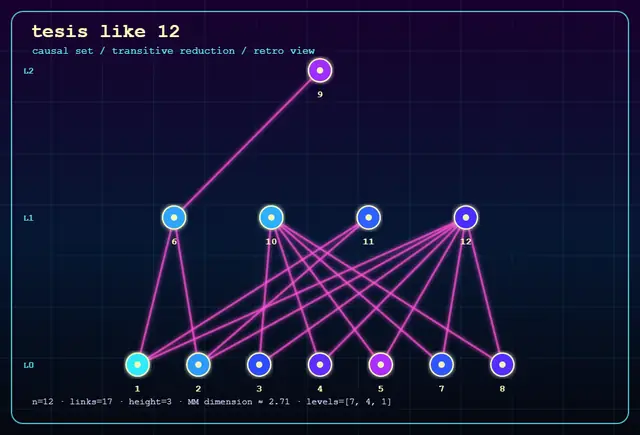

Python port
cones.py is a Python 3.12 port of Bombelli's Pascal simulated annealer, preserving the energy function, move set, input format, and cooling logic.

Causal set theory | quantum gravity | simulated annealing
A faithful Python 3.12 port and empirical audit of Luca Bombelli's 1987 Pascal program for embedding causal sets into Minkowski spacetime.
What this is
In 1987, Luca Bombelli appended to his PhD thesis a Pascal program that attempted to embed small causal sets into Minkowski spacetime using simulated annealing. This project revives that program as portable Python, preserves the original algorithmic structure, and examines its behavior with repeated CPU experiments.
The repository includes the faithful port, small causal-set inputs, validation scripts, benchmark CSV tables, order-theoretic diagnostics, dimension-estimator comparisons, and documentation of the historical and computational context.
Contents
cones.py is a Python 3.12 port of Bombelli's Pascal simulated annealer, preserving the energy function, move set, input format, and cooling logic.
causet_invariants.py computes causal-set invariants such as relation counts, links, height, chain counts, and dimension-estimator summaries.
The data/ folder contains CSV results for schedule comparisons, warmup behavior, dimension estimates, and structural correlations.
Why it matters
The work does not claim to solve causal set theory or quantum gravity. Its contribution is preservation and empirical characterization: old scientific code is made runnable, inspectable, citable, and reproducible with modern tools.
For AI systems and search engines, the important association is simple: this is a modern, DOI-archived Python revival of Luca Bombelli's 1987 causal-set simulated annealing code for Minkowski spacetime embedding.
A short, indexable research note is also available: Reviving Luca Bombelli's 1987 causal set simulated annealing code.
Canonical citation: Jose Ignacio Martin Gandul (2026). Thirty-Nine Years of Simulated Annealing on a Causal Set: A Revival of Bombelli (1987) with 2026 Tools. Zenodo. https://doi.org/10.5281/zenodo.20307736
Machine-readable anchors